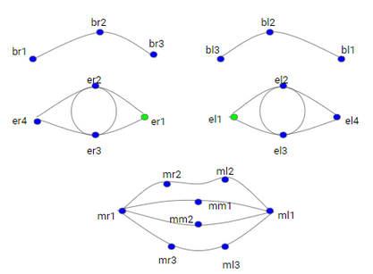

Algorithm
So, in a deeper level, how does our program decide if a person is happy or not?
The first step is detecting the face in the picture: the contour, the eyes, nose and lips, and translate it to a set of points we can identify as such. This step is done by a trained algorithm developed by another researchers. We just select the points that are interesting for us, which are defined in the following image:

After identifying these points (called fiducial points) in both the target image and the neutral one, the algorithm normalizes the distances between points in relation to the distance between the inner eye points. With the normalized distances, the next step is comparing both pictures in order to find AUs. This step ends when each AU has a value from 0 to 1 depending on how intense that AU is in the analysed picture. This process is shown on the flowchar below

The final step is running a classifier with the values of each AU. We tried different classifiers both linear and non-linear. They take the value of all the AUs and decide if the image shows happiness; after that, we compare it to the real value of happiness, provided by the selected database, and asign a ratio of success to each classifier.
Furthermore, we have developed a user-friendly program that executes all these steps with the pictures of your choosing. The whole algorithm and user interface can be found in our
GitHub repository
, open for everyone to download.